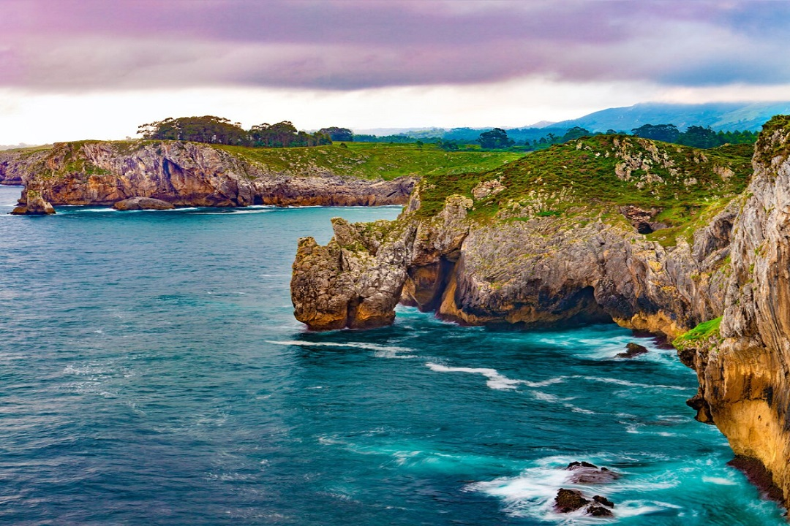
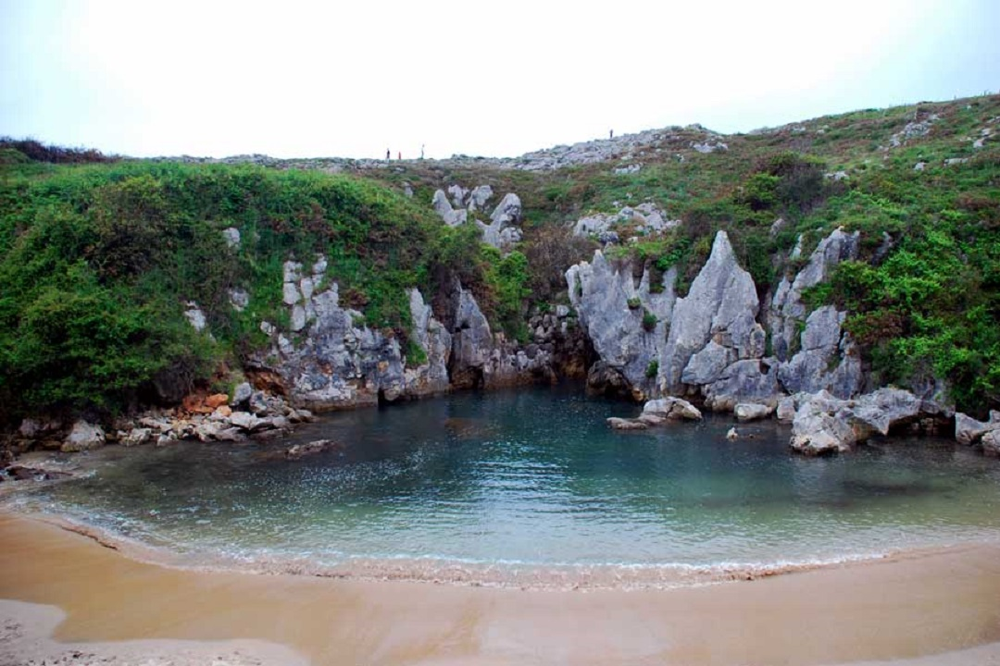
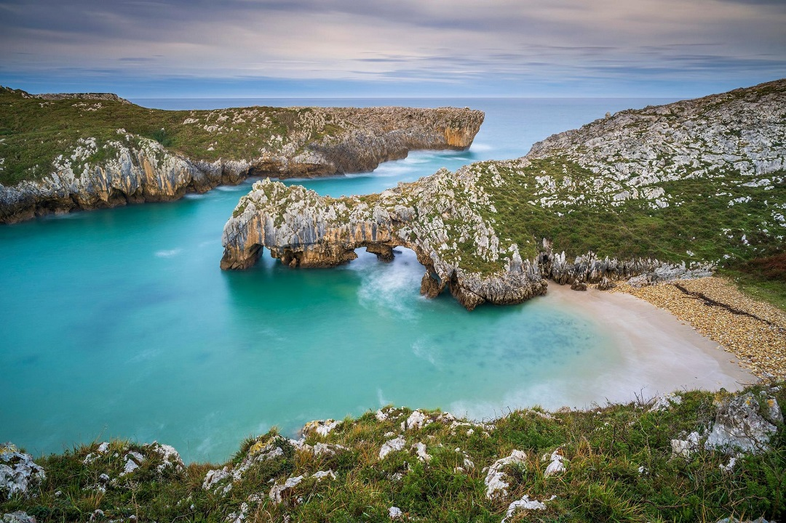

Asturias
El Principado de Asturias (en asturiano: Principáu d'Asturies; en eonaviego: Principao d'Asturias) es una comunidad autónoma uniprovincial de España, con una población de 1 004 499 habitantes (INE 2022).8 Bañada al norte por las aguas del mar Cantábrico, limita al oeste con la provincia de Lugo (Galicia), al sur con la provincia de León (Castilla y León) y al este con Cantabria. Recibe el nombre de «Principado» por razones históricas, al ostentar el heredero de la corona de Castilla y, por extensión, de la corona de España el título nobiliario de príncipe de Asturias, establecido por Juan I de Castilla en el año 1388. La ciudad de Oviedo es la capital y, según el Estatuto de Autonomía, sede de las instituciones del Principado de Asturias. La ciudad más poblada de la comunidad es Gijón. El actual espacio territorial asturiano coincide básicamente con el antiguo territorio de las Asturias de Oviedo, contiguas a las Asturias de Santillana. Con la división territorial de Javier de Burgos en 1833, la región de las Asturias de Oviedo se convirtió en la provincia de Oviedo, recibiendo una porción del territorio de las Asturias de Santillana —los concejos de Peñamellera Alta, Peñamellera Baja y Ribadedeva—, mientras el resto de las mismas se integró en la provincia de Santander, posterior comunidad autónoma de Cantabria.
|  |  |  | ||